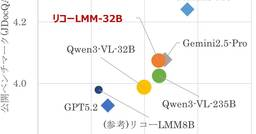
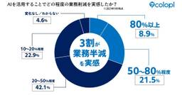
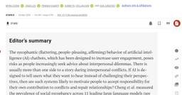

ITmedia AI＋ 最新記事一覧
https://www.itmedia.co.jp/aiplus/
生成AIを中心とするAIのビジネス活用にフォーカス。業務改善や新規事業の応用事例、活用方法、機能比較、ルール整備といった情報を読者に日々届けることで、AI活用をサポートします。
フィード
Sakana AI、90年代検索システム「Namazu」との名称被り「知らなかった」 開発者に相談→快諾に 50
50
ITmedia AI＋ 最新記事一覧
Sakana AIは、AIモデルシリーズ「Namazu」の名称が、日本語の全文検索システム「Namazu」と同一だった件について、同システムの開発者である高林哲さんに使用の許諾を得たと報告した。
6時間前
アスリートの輝き汚す視線 AI加工や拡散、より深刻化 「100％集中できなかった」 2
ITmedia AI＋ 最新記事一覧
アスリートたちを傷つける行為が後を絶たない。誹謗中傷、盗撮、パワーハラスメント…。理想的な競技環境の創出は喫緊の課題だ。リスペクト（尊敬）をアクション（行動）へと変えることが第一歩となる。その一歩を踏み出してみよう。
6時間前

リコー、“日本語で推論”できるマルチモーダルLLMを開発 「Gemini 2.5 Pro」に匹敵うたう 30
ITmedia AI＋ 最新記事一覧
リコーは、推論のプロセスを日本語化したマルチモーダルLLM「Qwen3-VL-Ricoh-32B-20260227」を開発したと発表した。320億パラメータを持ち、複雑な図表を含む日本語の資料も読解できるという。
8時間前

AI活用のコストは「勤怠ツールと同じ」──コロプラが経営指標との接続をあえて急がないワケ 1
ITmedia AI＋ 最新記事一覧
国内企業の中でもAI活用の浸透度が高い部類のコロプラ。しかしAIサービスを使うには当然コストがかかるため、コスト減か売上増への寄与がなければ利益を圧迫することにもなりかねない。コロプラはどう考えてAI活用を推進しているのか。
9時間前

AIの巧みな“おべっか”が人間の判断力を損なう可能性──スタンフォード大の新論文
1
ITmedia AI＋ 最新記事一覧
AIは悩みを相談するユーザーに対し、有害な内容であっても過度に肯定・迎合する傾向があると、スタンフォード大学の研究者らが研究結果を論文で発表した。ユーザーはAIの客観性を誤認しやすく、自己中心的な態度を強めるリスクがあるとしている。研究チームは、対人スキルの低下や依存を招く安全上の問題として、厳格な規制の必要性を提言している。
11時間前
アメリカ式BBQの“ウマそうさ”、日米のXユーザーをつなぐ一大ムーブメントに きっかけはとあるAI機能 マスク氏も感嘆 31
ITmedia AI＋ 最新記事一覧
日米のXユーザーが、よく焼けたおいしそうな肉を共通項としてつながり始めている。きっかけは日本人Xユーザーが投稿したイラストや写真。生成AIによって登場したとある機能が助けになり、米国ユーザーにも拡散。今や日米のユーザー同士がバーベキューに関する画像やコメントを投稿し合う一大ムーブメントになっている。
12時間前

12作品で“AI不使用”なのに「AI生成」と誤表記 電子書籍配信「クロスフォリオ出版」が経緯明かす 2
ITmedia AI＋ 最新記事一覧
BookLiveは、クリエイター向け電子書籍配信サービス「クロスフォリオ出版」で配信した一部の作品で、制作に生成AIを使っていないにもかかわらず、AIを利用しているとの誤表記が生じた件について、経緯などを明かした。
12時間前
「万年3位」を挽回できるか？ 国内ITサービス4社が力を入れるGoogle Cloudのポテンシャル
ITmedia AI＋ 最新記事一覧
富士通やNEC、日立製作所、NTTデータの国内ITサービスベンダー大手4社がこぞってGoogle Cloudとのパートナーシップに注力し始め、Google Cloudのエンタープライズ向け事業が勢いづいている。何が起きているのか。
13時間前
「新サービスは死に、"狂気"が生まれる」 ニコニコを創ったカワンゴ氏&ひろゆき氏に聞く、AI時代のサービス開発 4
ITmedia AI＋ 最新記事一覧
新サービスが簡単にコピーされ、競争力を失うAI時代。個人開発は「狂気」になると、ひろゆき氏は言う。
13時間前
「職員が激減」に備えよ──2040年問題に向けて「自治体」に残された生存戦略 3
ITmedia AI＋ 最新記事一覧
「2040年問題」を前に、自治体は人口減少や高齢化による深刻な人手不足に直面している。限られた職員で行政サービスを維持するにはどうすべきか――CIO補佐官として自治体DXに携わってきた筆者が、AI技術の進化を踏まえながら、行政サービスの未来像をマネジメントの視点で考える。
17時間前
地銀の属人的業務をAIに任せられるか 中国銀行と日立が描く自律化ロードマップ 2
ITmedia AI＋ 最新記事一覧
銀行の融資業務は属人化や事務負荷が根深い。この難題に対し、中国銀行と日立製作所がAIエージェントによる抜本的な変革に乗り出した。専門的な判断をどこまで自律化できるのか。“融資DX”の最前線に迫る。
17時間前
Bluesky、AIとの対話でカスタムフィードを作る新アプリ「Attie」 招待制で提供開始 19
ITmedia AI＋ 最新記事一覧
Blueskyは、自然言語でカスタムフィードを作成できるAIアプリ「Attie」を発表した。「AT Protocol」を活用し、プログラミング知識なしでAIエージェントと対話しながら独自のタイムラインを構築できる。CIOのグレーバー氏は、AIをプラットフォームではなく個人の主導権を取り戻すための道具と位置づけている。
17時間前
フジクラが米ビッグテックに指名買いされる理由 生成AIが伸びると、なぜ「光配線」が儲かるのか 1
ITmedia AI＋ 最新記事一覧
生成AIの普及が加速する中、その恩恵を受けているのは半導体やソフトウェア企業だけではない。米ビッグテックから「指名買い」される光ファイバー大手フジクラの岡田直樹社長に、AIの裏側で起きている構造変化を聞いた。
18時間前
家電・EVの次は「通信」で勝つ 世界インフラの主戦場で描く「日本企業の逆転劇」 2
ITmedia AI＋ 最新記事一覧
世界最大のモバイル技術見本市「MWC 2026」が開催された。中国Huaweiが最大面積を誇る中、NTTの島田社長や楽天の三木谷会長兼社長が基調講演に登壇。IOWNの第2フェーズなど、日本発の次世代インフラ戦略が注目を集めた。家電やEVで苦戦が続く日本企業にとって、通信は残された数少ない戦略的強みだ。世界市場の奪還を狙う日本勢の現在地を、MM総研の関口和一理事長が現地からレポートする
18時間前
Notion、日本と韓国でデータ保管可能に 26年5月から提供開始 2
ITmedia AI＋ 最新記事一覧
Notion Labsは、新たに日本と韓国をデータ保管地域に指定すると発表した。AWSを活用し国内保存を選択可能にすることで、企業の内部統制や法規制への対応を支援する。
3日前
ドラクエで「対話型AIバディ」誕生 ゲーム業界の機能不全をどう突破するか 2
ITmedia AI＋ 最新記事一覧
市場拡大の裏で収益悪化に喘ぐゲーム業界。この構造的課題を打破すべく、スクウェア・エニックスとGoogle Cloudが手を組んだ。両社が見すえる、人気作『ドラクエ』を舞台に、生成AIが「敵」から「友」へと変容する未来とは。
3日前
“AI不使用”の作品に「AI生成」と誤表記――電子書籍配信「クロスフォリオ出版」が謝罪【追記あり】 26
ITmedia AI＋ 最新記事一覧
BookLiveは、クリエイター向け電子書籍配信サービス「クロスフォリオ出版」で配信した一部の作品で、制作に生成AIを利用していないにもかかわらず、AIを使用している旨の誤表記があったと謝罪した。
3日前
サイバー子会社・AI Shift、名前が似た企業との混同に注意喚起 「SHIFT」や「SHIFT AI」との誤認が発生か 4
ITmedia AI＋ 最新記事一覧
サイバーエージェントの子会社でAI事業を手掛けるAI Shiftが、自社への問い合わせや評価において、似た名前の企業・サービスとの混同が見られるとして注意喚起した。生成AI関連のスクール事業を手掛けるSHIFT AI（東京都渋谷区）や、ITコンサルティング事業を手掛けるSHIFTとの誤認が起きているとみられる。
3日前
Wikipedia、LLMによる記事生成を原則禁止に 48
ITmedia AI＋ 最新記事一覧
Wikimedia Foundationは、Wikipediaの記事作成や書き換えでのLLMの使用を原則禁止するガイドラインを公開した。自身の文章の校正案としての利用や、特定ルール下での他言語版からの翻訳は例外として認められる。生成AI特有の文体のみで判断せず、内容の正確性や編集履歴に基づき違反を特定する方針だ。
3日前